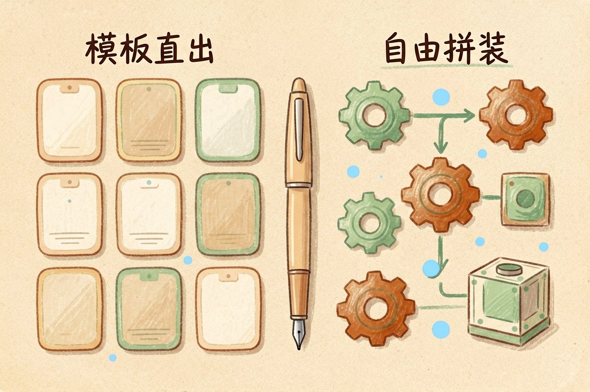
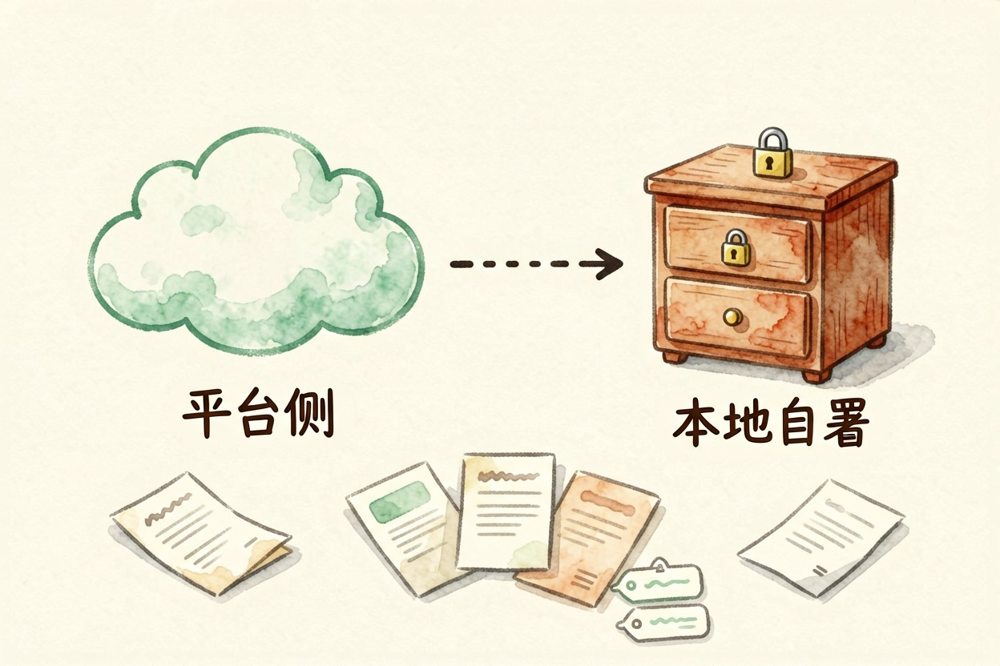
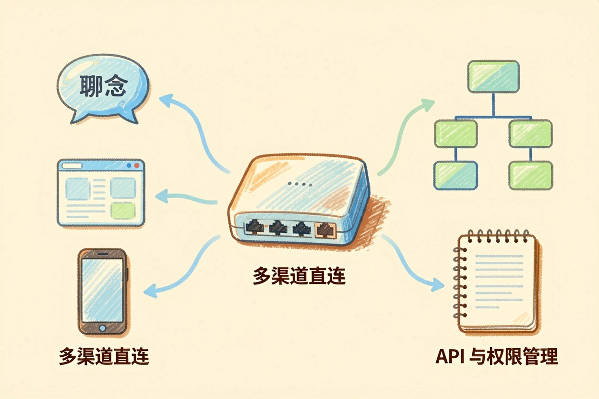

扣子和 Dify 哪个好？按用途分开说更清楚 — Learntide
两者的出发点本来就不同，一个奔着快速上线，一个奔着自己掌控。比总分没意义，得按用途拆。
扣子和dify哪个好：先看各自的出发点

扣子和dify哪个好，这个问题得先拆开。扣子想解决的是「个人快速做出一个能对外用的助手」，Dify 想解决的是「团队有一套自己能掌控的应用底座」。
方向不同，比总分没意义。下面按四个维度分开说，每个维度给一句结论。
一句话先摆这儿：面向外部用户就扣子，面向内部资料就 Dify。剩下的都是细节。
选型速查
资料能不能出公司？ 不能 → Dify 自部署
要不要接进群聊或公众号？ 要 → 扣子
有没有人能维护服务器？ 没有 → 扣子或 Dify 在线版
后面要接自家系统？ 要 → Dify上手速度和编排体验

扣子注册即用，模板和插件铺得满，第一个智能体半小时能跑通。coze和dify的区别在这一步体现得最直接。
Dify 在线版上手也不难，只是概念更多：应用、知识库、工具、编排分得很清楚，理解成本略高。好处是复杂需求不容易撞天花板。
模板这件事也别小看。扣子有大量现成模板，改一改就能交差；Dify 更像给你一套零件，得自己拼。
纯新手先摸扣子，不容易劝退。有点技术底子的，反倒觉得 Dify 的结构更顺。省时间还是要自由，看你手上有多少时间。
知识库与数据归属

两边都支持传文档做检索问答，差别在于文档存在哪里。
扣子的资料放在平台侧，方便，但导出和迁移受限制。Dify 可以自部署，文档、索引、日志都在自己机器上，敏感资料不必离开内网。
如果你处理的是合同、客户名单这类东西，这一条基本就把答案定死了，其他维度都得让位。
成本结构也跟着分岔。平台侧按调用计费，自部署把钱花在服务器和人力上。用量小的时候，前者更划算。
发布渠道与团队协作
扣子的优势是渠道现成。做好的助手能接进多个常用平台，配置几步就行，省掉自己搭前端的活。
Dify 更多是给出接口和一个网页入口，接到哪里由你决定。灵活，但得有人愿意干这个活。
团队这块，Dify 的成员权限和运行日志更贴近企业习惯，出了问题好追。
维护也要算进来。自部署意味着升级、备份、故障都归你，这部分工作量在选型时最常被漏掉。
怎么选：别纠结谁更强
做对外助手、想快点上线、不碰敏感资料，选扣子。做内部知识库、资料不能出公司、后面要接自家系统，选 Dify。
两个都试也完全可以。在线版都能免费建应用，拿同一批问题各跑一遍，差别一天就看出来。
预算这块两边都不算高门槛。真正的成本是学习时间和后续维护，钱反而是小头。
最后提醒一句：别按功能清单的条数做决定，清单长不代表你用得上。扣子和dify哪个好，最终看的是你的资料放哪、成品发到哪。
本文信息核对于 2026-08-08。AI 产品的价格、免费额度与功能变动频繁，实际以各工具官网当前说明为准。